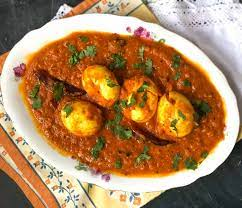

Egg Masala Gravy

Description
THard boiled eggs have no better end destination than this aromatic egg masala curry. It features a spiced onion and tomato gravy, plus a tadka and cilantro to finish. Serve with rice or roti.
Ingredients
- Ghee
- Mustard seeds
- Onion
- Chilli
- Cumin
- Turmeric
- Tomato
- Cilantro
- Black Pepper
- Egg
Steps
- Sauté the onions with the spices
- Add the tomatoes.
- Add water and cover.
- As the curry simmers, make the tadka.
- Add the eggs to the curry and simmer